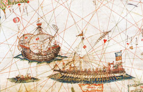

Lezione 10  Scoperte Geografiche
Scoperte Geografiche

I viaggi di esplorazione e le conseguenti grandi scoperte geografiche caratterizzarono il XV secolo. Ebbero come protagonisti la Spagna e il Portogallo, che cercavano una nuova via per raggiungere le Indie e le spezie che lì venivano prodotte: lo zucchero di canna, il pepe, la cannella, i chiodi di garofano, lo zenzero. Questi prodotti costavano poco nelle Indie, ma erano venduti a caro prezzo in Occidente dalla Repubblica di Venezia, che deteneva il monopolio sulla vendita dei prodotti orientali. Raggiungere l’Oriente, passando dall’Atlantico attraverso una via alternativa, significava per la Spagna e il Portogallo non dover sottostare all’intermediazione dei veneziani e poter entrare in concorrenza con loro. Affrontare l’Atlantico fu possibile grazie a nuove tecniche nel campo della navigazione. Si utilizzarono nuove imbarcazioni, le caravelle, più veloci, snelle e leggere rispetto alle precedenti galee, e soprattutto capaci di risalire il vento. Si perfezionarono l’uso della bussola e di strumenti di navigazione basati sull’osservazione astronomica, che garantivano una maggior precisione. Il Portogallo fu il primo a compiere grandi spedizioni nell’oceano: sia i mercanti sia lo Stato investirono parecchio denaro nelle imprese marinare. Un impulso particolare venne dal principe Enrico il Navigatore, che fondò una scuola di navigazione e finanziò di sua mano i viaggi di esplorazione. La via che il Portogallo tentò prevedeva la circumnavigazione dell’Africa, che si credeva di dimensioni abbastanza ridotte. Gli esploratori raggiunsero le isole di Capo Verde, il Golfo della Guinea, e nel 1487 la punta meridionale dell’Africa, che venne chiamata Capo di Buona Speranza. Vasco da Gama dieci anni più tardi raggiunse finalmente le coste indiane. La nuova via per le Indie era aperta.